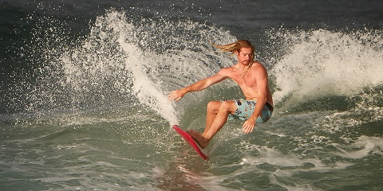

This could be you

Andre's Photography is an onshore surf photography service. Capturing the moves of surfers and bodyboarders in the Cape Paterson area

Andre's Photography is an onshore surf photography service. Capturing the moves of surfers and bodyboarders in the Cape Paterson area